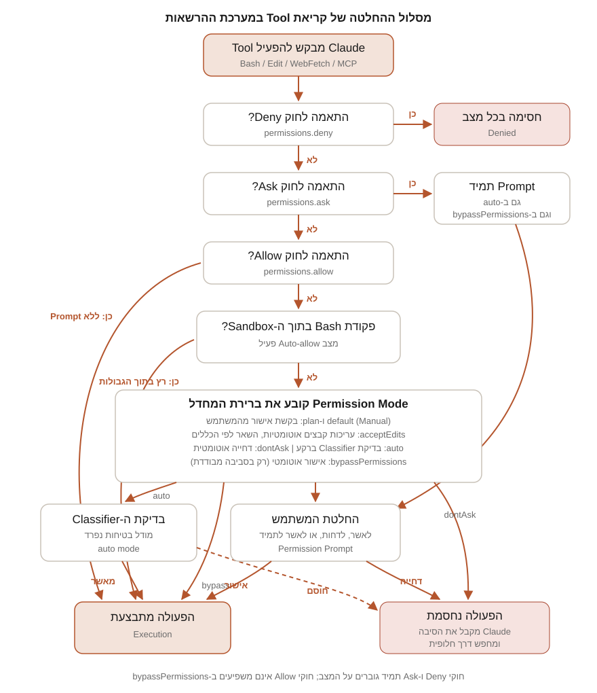

חלק ד | פרק 18
Permission Modes
מערכת ההרשאות היא ההגה והבלמים של Claude Code: היא קובעת מה ה-Agent רשאי לעשות לבד ומה דורש את האישור שלכם. בפרק הזה נכיר לעומק את ששת מצבי ההרשאות המתועדים, נלמד מתי כל מצב מתאים ומתי הוא מסוכן, נבין איך המצבים משתלבים עם חוקי Allow, Ask ו-Deny ועם ה-Sandbox, ונצלול למנגנון ה-Classifier של auto mode. בסוף הפרק תדעו לבחור מצב מתאים לכל סיטואציה, מחקירת קוד זר ועד הרצה אוטונומית ממושכת.
למה קיימת מערכת הרשאות
Claude Code הוא Agent שפועל בלולאה: הוא קורא קבצים, עורך אותם ומריץ פקודות Shell בשמכם (ראינו את הלולאה בפרק 3). כוח כזה מחייב בקרה. כשה-Claude רוצה לערוך קובץ, להריץ פקודה או לבצע בקשת רשת, הוא עוצר ומבקש אישור, ומצב ההרשאות (Permission Mode) קובע כמה פעמים העצירה הזאת קורית. התיעוד מגדיר מערכת מדורגת לפי סוג הכלי:
| סוג הכלי | דוגמה | נדרש אישור? |
|---|---|---|
| קריאה בלבד | קריאת קבצים, Grep | לא, בתוך תיקיית העבודה ותיקיות שהוספתם |
| פקודות Bash | הרצת Shell | כן, מלבד סט מובנה של פקודות קריאה בלבד (ls, cat, pwd ועוד) |
| שינוי קבצים | עריכה וכתיבה | כן; אישור "don't ask again" תקף עד סוף ה-Session |
נקודה מהותית שהתיעוד מדגיש: חוקי ההרשאות נאכפים על ידי Claude Code עצמו, לא על ידי המודל. הוראה ב-Prompt או ב-CLAUDE.md משפיעה על מה ש-Claude מנסה לעשות, אבל לא על מה שמותר לו. הענקה ושלילה של גישה נעשות רק דרך /permissions, חוקי ההרשאות, מצב ההרשאות, או PreToolUse Hook. זו ההבחנה בין בקשה מנומסת לבין מנעול.
איך זה עובד מושגית: מסלול ההחלטה
כל קריאת Tool עוברת מסלול החלטה קבוע. חוקי ההרשאות מהגדרות (פרק 17) נבדקים בסדר מתועד: קודם Deny, אחר כך Ask, ולבסוף Allow; ההתאמה הראשונה בסדר הזה מנצחת, ורמת הפירוט של החוק לא משנה את הסדר. רק אם אף חוק לא הכריע, מצב ההרשאות קובע את ברירת המחדל: בקשת אישור, אישור אוטומטי, בדיקת Classifier או דחייה.

שני כללים חשובים נגזרים מהתרשים ומתועדים במפורש: חוקי Deny וחוקי Ask מפורשים חלים בכל מצב, כולל bypassPermissions. לעומת זאת, לחוקי Allow אין השפעה ב-bypassPermissions, כי שם ממילא הכול מאושר.
ששת המצבים: סקירה
נכון לתאריך המחקר, התיעוד הרשמי מגדיר שישה מצבי הרשאות. אלה השמות המדויקים כפי שהם מופיעים בהגדרות ובדגלים:
| מצב | מה רץ בלי לשאול | מתאים ל... |
|---|---|---|
default | קריאה בלבד | התחלה, עבודה רגישה |
acceptEdits | קריאה, עריכות קבצים ופקודות מערכת קבצים נפוצות | איטרציה על קוד שאתם סוקרים |
plan | קריאה, ובנוסף פקודות שה-Classifier אישר כש-auto mode זמין | חקירת Codebase לפני שינוי |
auto | הכול, עם בדיקות בטיחות ברקע | משימות ארוכות, הפחתת עייפות אישורים |
dontAsk | רק כלים שאושרו מראש | CI וסקריפטים בסביבה נעולה |
bypassPermissions | הכול | אך ורק Containers ו-VMs מבודדים |
המצב שסוקר כל פעולה נקרא Manual בממשק ה-CLI, בהרחבות VS Code ו-JetBrains ובאפליקציית ה-Desktop. ערך ההגדרה שלו הוא default, וזה מה ש-Hooks ואינטגרציות SDK משתמשים בו. מגרסה 2.1.200 ה-CLI מקבל גם את הכינוי manual בכל מקום שמקלידים את הערך, למשל claude --permission-mode manual.
פרופיל מלא לכל מצב
default (Manual): סקירה של כל פעולה
מה מאושר אוטומטית: פעולות קריאה בלבד בתוך תיקיית העבודה ותיקיות additionalDirectories, וסט הפקודות המובנה של Bash לקריאה בלבד. מה עדיין דורש אישור: כל עריכת קובץ, כל פקודת Bash אחרת וכל בקשת רשת. מתי להשתמש: בהתחלה, כשעדיין בונים אינטואיציה למה ש-Claude עושה; בעבודה על קוד רגיש; וב-Repository לא מוכר. מתי לא: במשימות ארוכות עם עשרות עריכות צפויות, שם האישורים החוזרים שוחקים את הריכוז ומפתחים הרגל מסוכן של אישור אוטומטי בלי קריאה. סיכונים: נמוכים מטבעם; הסיכון העיקרי הוא דווקא "עיוורון אישורים" של המשתמש. תרחיש: קיבלתם Pull Request חיצוני לפרויקט TaskFlow ואתם מבקשים מ-Claude לתקן בו באג. במצב Manual תראו כל Diff לפני שהוא נכתב וכל פקודה לפני שהיא רצה.
טיפ מתועד לשלב האישור: בבקשת אישור לפקודת Bash או PowerShell, לחיצה על Ctrl+E מציגה הסבר של הפקודה: מה היא עושה, למה Claude מריץ אותה ומה עלול להשתבש, עם דירוג Low/Med/High risk. ההסבר נוצר רק כשמבקשים אותו, והצגתו אינה מריצה את הפקודה.
acceptEdits: עריכות בלי שאלות
מה מאושר אוטומטית: יצירה ועריכה של קבצים בתיקיית העבודה, ובנוסף פקודות מערכת קבצים נפוצות: mkdir, touch, rm, rmdir, mv, cp ו-sed, גם כשהן עטופות במשתני סביבה בטוחים (כמו LANG=C) או ב-Wrappers כמו timeout ו-nohup. האישור האוטומטי חל רק על נתיבים בתוך תיקיית העבודה או additionalDirectories. כשכלי ה-PowerShell מופעל, מאושרות גם Set-Content, Add-Content, Clear-Content ו-Remove-Item באותם גבולות. מה עדיין דורש אישור: נתיבים מחוץ לתחום, כתיבה ל-Protected Paths (נגיע אליהם בהמשך), וכל פקודת Bash אחרת שאינה בסט הקריאה בלבד. מתי להשתמש: כשאתם מעדיפים לסקור שינויים אחרי מעשה, ב-Editor או עם git diff, במקום לאשר כל עריכה בנפרד. זה המצב הטבעי ללולאת TDD: Claude עורך, אתם מריצים בדיקות וסוקרים. מתי לא: בקוד שלא נמצא תחת Git, כי אין לכם Diff אמין לסקירה; וב-Repository לא מהימן. סיכונים: שימו לב ש-rm בתוך תיקיית העבודה מאושר אוטומטית במצב הזה, ומחיקות דרך Bash אינן ניתנות לשחזור עם Rewind (פרק 19). תרחיש: אתם מיישמים ב-TaskFlow שדה priority חדש על פני שישה קבצים ידועים מראש. אישרתם את הכיוון, ועכשיו נוח לתת ל-Claude לערוך ברצף ולסקור בסוף עם git diff.
plan: לחקור ולתכנן בלי לגעת
מה מאושר אוטומטית: קריאת קבצים ופקודות חקירה. Claude חוקר, מריץ פקודות לצורך הבנה וכותב תוכנית, אבל לא עורך את קבצי המקור עד שתאשרו את התוכנית. כש-auto mode זמין וההגדרה useAutoModeDuringPlan פעילה (ברירת המחדל), ה-Classifier בודק פקודות Shell בזמן התכנון במקום לשאול אתכם: פקודות שאושרו רצות, ופקודות שנדחו נחסמות. אחרת, פקודות מחוץ לסט הקריאה בלבד מבקשות אישור. מתי להשתמש: לפני כל שינוי גדול; הרחבנו על שיטת העבודה הזאת בפרקי ה-Workflow. מתי לא: לתיקונים זעירים שהתכנון בהם יקר מהביצוע. סיכונים: נמוכים, עם חריג מתועד אחד חשוב: ב-Sessions שהופעלו עם bypass permissions זמין, החסימות של מצב התכנון אינן נאכפות; Claude עדיין מונחה לתכנן בלי לערוך, אבל עריכה או פקודה שהוא ינסה בזמן התכנון ירוצו בלי בקשה. אל תסמכו על Plan Mode כמנגנון בטיחות בסביבה כזאת.
כשהתוכנית מוכנה, Claude מציג אותה ושואל איך להמשיך. האפשרויות המתועדות: Yes, and use auto mode (כש-auto אינו זמין: Yes, auto-accept edits, וב-Session עם bypass: Yes, and bypass permissions); Yes, manually approve edits; No, refine with Ultraplan on Claude Code on the web; ו-No, keep planning. אישור התוכנית יוצא ממצב התכנון ומעביר את ה-Session למצב שהאפשרות שבחרתם מתארת. Ctrl+G פותח את התוכנית המוצעת ב-Editor לעריכה ישירה לפני ההמשך. אפשר גם להקדים /plan ל-Prompt בודד כדי להיכנס למצב תכנון לאותה בקשה.
auto: אוטונומיה עם Classifier
מה מאושר אוטומטית: כמעט הכול, אבל לא באופן עיוור: מודל Classifier נפרד בודק פעולות לפני שהן רצות, וחוסם כל דבר שחורג מהבקשה שלכם, פונה לתשתית לא מוכרת, או נראה מונע מתוכן עוין ש-Claude קרא. חוקי Ask מפורשים עדיין כופים בקשת אישור. מה עדיין נבדק או נחסם: רשימת ברירת המחדל של החסימות ארוכה ומתועדת; בין הבולטות: הורדת קוד והרצתו (curl | bash), שליחת מידע רגיש לנקודות קצה חיצוניות, Deploys ו-Migrations ל-Production, מחיקה המונית באחסון ענן, הענקת הרשאות IAM, השמדת קבצים שהיו קיימים לפני ה-Session, Force Push, פקודות שמוחקות שינויים לא שמורים כמו git reset --hard ו-git clean -fd, וכן terraform destroy ודומיו. מה מותר כברירת מחדל: פעולות קבצים מקומיות בתיקיית העבודה, התקנת תלויות שמוצהרות ב-Lock Files, בקשות HTTP לקריאה בלבד, ו-Push לכל Branch של ה-Repository שבו עובדים (מגרסה 2.1.211; Branch ששמו מסמן יעד פריסה, כמו production או gh-pages, נשפט לגופו). מתי להשתמש: משימות ארוכות בכיוון שאתם סומכים עליו, בתשתית שלכם. מתי לא: התיעוד מזהיר במפורש: auto mode מפחית בקשות אישור אך אינו מבטיח בטיחות; אל תשתמשו בו כתחליף לסקירה בפעולות רגישות. תרחיש: ביקשתם מ-Claude לעבור על כל קבצי הבדיקות של TaskFlow, לתקן Flaky Tests ולהריץ את הסוויטה שוב ושוב עד ירוק. עשרות פקודות ועריכות, כולן בתוך ה-Repository: מועמד קלאסי ל-auto.
זמינות: auto mode זמין בכל המסלולים (Plans), אבל בתוכניות Team ו-Enterprise נדרש Owner שיפעיל אותו בהגדרות הניהול. נדרש גם מודל נתמך: ב-Anthropic API וב-Claude Platform on AWS נדרש Claude Opus 4.6 ואילך, Sonnet 4.6 ואילך או Fable 5; ב-Amazon Bedrock, Google Cloud Agent Platform ו-Microsoft Foundry נתמכים רק Sonnet 5, Opus 4.7 ואילך ו-Fable 5. מודלים ישנים יותר, כולל Sonnet 4.5 ו-Haiku, אינם נתמכים. מנהלים יכולים לנטרל את המצב עם permissions.disableAutoMode: "disable" ב-Managed Settings.
גבולות בשיחה: ה-Classifier מתייחס לגבולות שאמרתם בשיחה כאות חסימה: "אל תעשה Push עד שאבדוק" יחסום פעולות תואמות גם כשחוקי ברירת המחדל היו מאשרים. אבל גבול כזה אינו נשמר כחוק: הוא נקרא מחדש מהשיחה בכל בדיקה, ועלול ללכת לאיבוד אם Compaction הסיר את ההודעה. לערובה קשיחה, השתמשו בחוק Deny. נפילה חזרה לבקשות: אם ה-Classifier חסם פעולה שלוש פעמים ברצף או עשרים פעמים בסך הכול, auto mode מושהה ו-Claude Code חוזר לשאול; אישור הבקשה מחזיר את המצב. במצב לא אינטראקטיבי (-p) חסימות חוזרות מפילות את ההרצה, כי אין את מי לשאול. חסימות מופיעות ב-/permissions תחת הלשונית Recently denied, שם לחיצה על r מסמנת פעולה לניסיון חוזר עם אישור ידני.
dontAsk: לדחות במקום לשאול
מה מאושר אוטומטית: רק מה שאושר מראש: פעולות שתואמות חוקי permissions.allow, פקודות ה-Bash מסט הקריאה בלבד, וקריאות שאושרו על ידי PreToolUse Hook. מה קורה לכל השאר: דחייה אוטומטית, בלי בקשה. גם קריאות שתואמות חוקי Ask מפורשים נדחות במקום לשאול, וכך גם הכלי המובנה AskUserQuestion וכלי Connector שהארגון הגדיר כ-ask, אפילו אם חוקי ה-Allow שלכם תואמים אותם. מתי להשתמש: CI Pipelines וסביבות מוגבלות שבהן אתם מגדירים מראש בדיוק מה מותר, וה-Session לעולם לא מחכה לקלט. מתי לא: בעבודה אינטראקטיבית רגילה; דחיות שקטות של פעולות לגיטימיות מבלבלות ומבזבזות Tokens על ניסיונות חלופיים. הערות: המצב לעולם לא מופיע במחזור ה-Shift+Tab; מפעילים אותו רק עם claude --permission-mode dontAsk או בהגדרות. Sessions בענן על Claude Code on the web מתעלמים מ-defaultMode: "dontAsk". תרחיש: משימת CI שמריצה claude -p לעדכון קובץ CHANGELOG, עם חוקי Allow ל-Edit על הקובץ הזה בלבד ול-Bash(git diff *). כל ניסיון אחר נדחה, וה-Pipeline לא נתקע לעולם על שאלה.
bypassPermissions: בלי שאלות ובלי בדיקות
מה מאושר אוטומטית: הכול, כולל כתיבה ל-Protected Paths. מה בכל זאת עוצר: חוקי Ask מפורשים, כלי Connector שהארגון הגדיר כ-ask, כלי MCP המסומנים requiresUserInteraction, ומעצור חירום (Circuit Breaker) מתועד: מחיקות שמכוונות לשורש מערכת הקבצים או לתיקיית הבית, כמו rm -rf / ו-rm -rf ~, עדיין מבקשות אישור, כולל כשהמחיקה מוסתרת בתוך Command Substitution (מגרסה 2.1.208). מתי להשתמש: אך ורק בסביבות מבודדות: Containers, VMs או Dev Containers ללא גישה לאינטרנט, שבהן Claude Code לא יכול להזיק למערכת המארחת. מתי לא: בכל מקום אחר. פירוט בקריאת האזהרה למטה.
פרטי הפעלה מתועדים: אי אפשר להיכנס ל-bypassPermissions מתוך Session שהופעל בלי שהמצב הופעל בו. מפעילים אותו בהרצה עם --permission-mode bypassPermissions, עם --dangerously-skip-permissions (דגל שקול), עם --allow-dangerously-skip-permissions (שרק מוסיף את המצב למחזור ה-Shift+Tab בלי להפעילו), או עם permissions.defaultMode: "bypassPermissions" בהגדרות. בהפעלה האינטראקטיבית הראשונה מוצג חלון אזהרה שמבקש מכם לקבל אחריות; סירוב סוגר את התוכנית. ב-Linux ו-macOS, Claude Code מסרב לרוץ במצב הזה כ-root או תחת sudo. Claude Code on the web מתעלם מ-defaultMode: "bypassPermissions" בקובצי ההגדרות, כך ש-Repository לא יכול להעניק לעצמו את המצב ב-Session ענן. מנהלים (או אתם עצמכם) יכולים לחסום את המצב לגמרי עם permissions.disableBypassPermissionsMode: "disable".
--dangerously-skip-permissionsהמצב הזה מבטל את בקשות האישור ואת בדיקות הבטיחות גם יחד, ואינו מספק שום הגנה מפני Prompt Injection או פעולות לא מכוונות. המשמעות המעשית: פקודה הרסנית שמגיעה מקוד עוין, מקובץ README זדוני או מטעות של המודל תרוץ מיד. זה כולל מחיקת קבצים ותיקיות (שאינה ניתנת לשחזור עם Rewind), הרצת Migrations על בסיס נתונים, Deployments ל-Production, קריאת קובצי סודות ושליחתם ל-APIs חיצוניים, ושינוי קובצי תצורה של המערכת. השתמשו בו אך ורק בסביבה מבודדת שאין בה שום דבר שחשוב לכם: Container או VM ייעודיים, רצוי בלי גישת רשת ובלי Credentials. לעולם לא על תחנת העבודה שלכם, לעולם לא בתיקייה עם גישה ל-Production. אם המטרה היא פחות בקשות אישור עם בדיקות בטיחות ברקע, התיעוד מפנה במפורש ל-auto mode כחלופה הנכונה.
מעבר בין מצבים
את המצב מחליפים דרך הפקדים, לא בבקשה מ-Claude בצ'אט. הדרכים המתועדות:
- בתוך ה-Session (CLI):
Shift+Tabעובר במחזורdefaultואזacceptEditsואזplan. שורת הסטטוס מציגה את המצב הפעיל, למשל plan mode on או accept edits on. מצבים אופציונליים נכנסים למחזור אחריplan:bypassPermissionsרק אם הופעל בהרצה, ו-autoכשהחשבון עומד בדרישות; אם שניהם זמינים,bypassPermissionsקודם ו-autoאחרון.dontAskלעולם אינו במחזור. - בהרצה:
claude --permission-mode <mode>, עובד גם עם-pלהרצות לא אינטראקטיביות, וגובר עלdefaultModeמההגדרות. - כברירת מחדל קבועה: המפתח
permissions.defaultModeבקובץ הגדרות (פרק 17). את הממשק הגרפי להגדרות פותחים עם/config, ואת חוקי ההרשאות מנהלים עם/permissions. - VS Code: לחיצה על מחוון המצב בתחתית תיבת ה-Prompt. ברירת מחדל נקבעת עם
claudeCode.initialPermissionMode(שאינו מקבלauto; ל-auto כברירת מחדל השתמשו ב-defaultModeבהגדרות המשתמש). Bypass מופיע רק אחרי הפעלת המתג Allow dangerously skip permissions בהגדרות ההרחבה. - Desktop: בורר מצב ליד כפתור השליחה. מצב שנבחר נזכר פר תיקייה וגובר על
defaultModeעבורה; Plan הוא החריג וחל על ה-Session הנוכחי בלבד. - Web ו-Mobile: תפריט מצבים ליד תיבת ה-Prompt. ב-Sessions ענן זמינים Accept edits, Plan ו-Auto (כשהארגון מאפשר); Bypass אינו זמין. ב-Remote Control זמינים Manual, Accept edits ו-Plan.
{
"permissions": {
"defaultMode": "acceptEdits"
}
}שימו לב לסייג בטיחות מתועד: Claude Code (מגרסה 2.1.142) מתעלם מ-defaultMode: "auto" שמוגדר ב-.claude/settings.json או ב-.claude/settings.local.json של הפרויקט, כדי ש-Repository לא יוכל להעניק לעצמו auto mode. אם הגדרתם auto וה-Session נפתח ב-default, העבירו את ההגדרה ל-~/.claude/settings.json.
מצבים מול חוקי Allow, Ask ו-Deny
העיקרון המתועד: המצבים קובעים את קו הבסיס, והחוקים שכבה מעליו. סדר הבדיקה של החוקים הוא deny, אחר כך ask, אחר כך allow, וההתאמה הראשונה מנצחת. לכן חוק Deny רחב כמו Bash(aws *) חוסם גם קריאה שתואמת חוק Allow צר יותר כמו Bash(aws s3 ls): חוק Deny לא יכול לשאת חריגים. ההיגיון הזה חוצה גם רמות הגדרות: Deny ברמת המשתמש חוסם Allow ברמת הפרויקט, ולהפך, כי חוקי Deny מכל רמה נבדקים לפני חוקי Allow.
- חוקי Deny וחוקי Ask מפורשים חלים בכל מצב, כולל
bypassPermissionsו-auto. - חוקי Allow חסרי השפעה ב-
bypassPermissions(הכול כבר מאושר), וב-dontAskהם בדיוק מה שקובע מה ירוץ. - בכניסה ל-auto mode נזרקים זמנית חוקי Allow רחבים שמעניקים הרצת קוד שרירותית:
Bash(*), Interpreters עם Wildcard כמוBash(python*), פקודות הרצה של מנהלי חבילות, וחוקי Allow לכלי Agent. חוקים צרים כמוBash(npm test)נשמרים, והחוקים שהוסרו חוזרים ביציאה מהמצב.
Protected Paths: כתיבה לקבוצה קטנה של נתיבים לעולם אינה מאושרת אוטומטית, מלבד ב-bypassPermissions. הרשימה כוללת בין השאר את .git, .claude, .vscode, .husky, .devcontainer, וקבצים כמו .bashrc, .zshrc, .npmrc, .pre-commit-config.yaml, .mcp.json ו-.claude.json. חשוב במיוחד: גם חוק permissions.allow בהגדרות אינו מאשר מראש כתיבה לנתיב מוגן; הבדיקה רצה לפני חוקי ה-Allow. במצבים ששואלים, הבקשה על כתיבה ל-.claude/ מציעה אפשרות לאשר עריכות כאלה להמשך ה-Session.
מצבים מול Sandbox
ה-Sandbox (מפעילים ומגדירים עם /sandbox) אינו מצב הרשאות: מצב ההרשאות מחליט אם קריאת Tool תרוץ ואם תישאלו, ואילו ה-Sandbox מגביל, ברמת מערכת ההפעלה, למה פקודת Bash יכולה לגשת ברגע שהיא רצה. נקודות המפגש המתועדות:
- כשה-Sandbox מופעל וההגדרה
autoAllowBashIfSandboxedנשארת בברירת המחדלtrue, פקודות Bash שרצות בתוך ה-Sandbox מאושרות אוטומטית בלי בקשה: גבול ה-Sandbox מחליף את הבקשה הכוללת על הכלי, אפילו אם יש לכם חוק Ask כללי עלBash. - ההחלפה הזאת אינה חלה על חוקי Ask ממוקדי תוכן כמו
Bash(git push *), על חוקי Deny (שתמיד נאכפים), ועל מעצור החירום למחיקות של שורש או תיקיית הבית. - ב-Plan Mode ההחלפה אינה מופעלת (מגרסה 2.1.212): גם עם Auto-allow דלוק, פקודות מעבר לסט הקריאה בלבד מבקשות אישור בזמן תכנון, או עוברות ל-Classifier כש-auto mode זמין.
- פקודה שנכשלת בגלל מגבלות ה-Sandbox עשויה לרוץ שוב מחוץ לו (מנגנון ה-Escape Hatch עם הפרמטר
dangerouslyDisableSandbox), ואז היא חוזרת למסלול ההרשאות הרגיל. כדי להישאל על כל ניסיון כזה גם ב-auto, הוסיפו חוק Ask עלBash(dangerouslyDisableSandbox:true); לביטול המנגנון לגמרי הגדירו"allowUnsandboxedCommands": false.
השילוב המומלץ בתיעוד הוא הגנה לעומק: חוקי Deny מונעים מ-Claude אפילו לנסות לגשת למשאבים אסורים, וה-Sandbox מונע מפקודות לחצות את הגבול גם אם Prompt Injection עקף את שיקול הדעת של המודל.
ה-Classifier של auto mode לעומק
כל פעולה ב-auto mode עוברת סדר החלטה קבוע: קודם חוקי Allow, Ask ו-Deny שלכם (כתיבה ל-Protected Paths מנותבת ל-Classifier גם כשחוק Allow תואם); אחר כך פעולות קריאה ועריכות בתיקיית העבודה מאושרות אוטומטית; כל השאר עובר ל-Classifier; ואם הוא חוסם, Claude מקבל את הסיבה ומנסה דרך חלופית. ה-Classifier רואה את הודעות המשתמש, קריאות הכלים ותוכן ה-CLAUDE.md, אבל תוצאות כלים מוסתרות ממנו בכוונה, כדי שתוכן עוין בקובץ או בדף אינטרנט לא יוכל לתמרן אותו ישירות. בדיקה נפרדת בצד השרת סורקת תוצאות נכנסות ומסמנת תוכן חשוד לפני ש-Claude קורא אותו.
אפשר לכוון את ה-Classifier דרך בלוק ההגדרות autoMode (נקרא מהגדרות המשתמש, מ-Managed Settings ומהדגל --settings, ובמכוון לא מהגדרות הפרויקט): המפתח autoMode.environment מגדיר תשתית מהימנה בשפה חופשית (אילו Repos, Buckets ו-Domains נחשבים "בפנים"); allow, soft_deny ו-hard_deny מרחיבים או מחליפים את רשימות הכללים; ו-autoMode.classifyAllShell: true משעה את כל חוקי ה-Allow של Shell כדי שכל פקודה תעבור בדיקה. הכללים המובנים נשמרים כשכוללים את המחרוזת "$defaults" במערך; השמטתה מחליפה את כל רשימת ברירת המחדל, וזה מסוכן. לבדיקה: claude auto-mode defaults מדפיס את הכללים המובנים, claude auto-mode config את התצורה בפועל, claude auto-mode critique מבקש ביקורת על כללים שכתבתם, ו-claude auto-mode reset מאפס.
נקודת ביקורת אנושית בתוך auto: המתכון המתועד הוא חוקי Ask ממוקדי תוכן, שנבדקים לפני ה-Classifier ותמיד עוצרים לשאלה:
{
"permissions": {
"ask": [
"Bash(git push *)",
"Bash(gh pr create *)"
]
}
}איזה מצב לכל סיטואציה
| סיטואציה | מצב מומלץ | נימוק |
|---|---|---|
| חקירת Codebase והכנת שינוי גדול | plan | קריאה וחקירה חופשיות, אפס שינויי קבצים עד אישור התוכנית |
| לולאת TDD: עריכה, בדיקה, עריכה | acceptEdits | עריכות רצות בלי הפרעה; הסקירה נעשית עם git diff והבדיקות |
| Refactoring רחב | plan ואז לפי אמון | תכנון קודם; ביצוע ב-Manual לקוד רגיש או acceptEdits לקוד מכוסה בבדיקות |
| משימה ארוכה ואוטונומית בתשתית שלכם | auto | מינימום עצירות עם Classifier ששומר על הגבולות |
| CI וסקריפטים לא אינטראקטיביים | dontAsk | רשימת Allow מוגדרת מראש; שום דבר לא מחכה לקלט |
| Repository לא מהימן | default | סקירה של כל פעולה, רצוי בתוספת Sandbox וחוקי Deny; לעולם לא bypass |
| ניסויים ב-Container מבודד וחד פעמי | bypassPermissions | רק כשאין שום דבר לאבד בסביבה ואין בה Credentials |
שגיאות נפוצות
- לבקש מ-Claude "עבור למצב plan" בצ'אט. את המצב מחליפים דרך הפקדים (
Shift+Tab, דגל, הגדרות, בורר ב-IDE), לא בבקשה בשיחה. - להניח ש-acceptEdits מאשר רק עריכות. הוא מאשר גם
rm,mvו-sedבתוך תיקיית העבודה, ומחיקות Bash אינן משוחזרות עם Rewind. - לכתוב חוק Deny רחב ולצפות לחריגים.
Bash(aws *)ב-Deny חוסם גם אתBash(aws s3 ls)שב-Allow. חריגים בונים עם חוקי Allow צרים ובלי Deny חופף, או עם Hook. - לסמוך על Plan Mode ב-Session עם bypass זמין. שם חסימות התכנון אינן נאכפות; זו התנהגות מתועדת.
- להגדיר defaultMode: "auto" בהגדרות הפרויקט. ההגדרה נקראת רק מהגדרות המשתמש או מ-Managed Settings; בקובצי הפרויקט היא מתעלמת בשקט.
- להשתמש ב-dontAsk בעבודה אינטראקטיבית. תקבלו דחיות שקטות ותהיות למה Claude "לא מצליח כלום".
Troubleshooting
- בקשת אישור לא צפויה למרות acceptEdits או auto: בדקו אם היעד הוא Protected Path (כמו
.claude/או.zshrc), אם קיים חוק Ask תואם (חוקי Ask גוברים על המצב), אם זה כלי Connector שהארגון הגדיר כ-ask, או אם פקודה מורכבת מכילה תת-פקודה שאינה מכוסה: חוק חייב להתאים לכל תת-פקודה בנפרד (&&,;,|וכדומה). - אין בקשת אישור איפה שציפיתם לה: בדקו אם ה-Sandbox פעיל עם Auto-allow (
/sandbox), אם אתם ב-acceptEditsוהפקודה היא ממשפחת פקודות מערכת הקבצים המאושרות, או אם אישור קודם עם "don't ask again" נשמר ב-.claude/settings.local.jsonבשורש ה-Repository. הפקודה/permissionsמציגה כל חוק ואת הקובץ שממנו הוא הגיע. - המצב "מתאפס" בין Sessions:
Shift+Tabמשנה את ה-Session הנוכחי בלבד. לברירת מחדל קבועה הגדירוdefaultMode; ב-Desktop זכרו ש-Plan שנבחר בבורר חל על ה-Session הנוכחי בלבד, בשונה משאר המצבים שנזכרים פר תיקייה. - auto לא מופיע במחזור ה-Shift+Tab: אחת מדרישות הזמינות לא מתקיימת: מודל נתמך, הפעלת Owner בתוכניות Team/Enterprise, או ש-
disableAutoModeהוגדר. הודעה נפרדת בנוסח "cannot determine the safety" מציינת כשל זמני של בקשת Classifier, לא חוסר זמינות. - bypassPermissions לא מופיע במחזור: המצב מצטרף למחזור רק כשה-Session הופעל עם אחד מדגלי ההפעלה או עם ההגדרה המתאימה; אי אפשר להיכנס אליו באמצע Session רגיל.
- חסימות חוזרות ב-auto: בדרך כלל ה-Classifier חסר הקשר על התשתית שלכם. בדקו את הלשונית Recently denied ב-
/permissions, הוסיפו יעדים ל-autoMode.environment, ואמתו עםclaude auto-mode config.
Security
מצב ההרשאות הוא קו ההגנה המרכזי מפני התרחיש שהצגנו בפרק 6 ובפרק 20: Prompt Injection שגורם ל-Claude לנסות פעולה שלא ביקשתם. כמה עקרונות מהתיעוד:
- בקוד לא מהימן, הישארו ב-
defaultאוplan, קראו כל בקשת אישור בעיון, והפעילו Sandbox. אל תאשרו פקודות רשת שאינכם מבינים. - גבולות שנאמרו בשיחה הם אות חסימה ל-Classifier, אבל רק חוק Deny הוא ערובה קשיחה ששורדת Compaction.
- הגנו על קובצי סודות עם חוקי Deny כמו
Read(.env)וזכרו שהם חלים על כלי הקבצים המובנים ועל פקודות קבצים מזוהות ב-Bash, אך לא על תהליכים שרירותיים שפותחים קבצים בעצמם; לאכיפה ברמת מערכת ההפעלה נדרש ה-Sandbox. - בארגון, השתמשו ב-Managed Settings: חוקים שם אינם ניתנים לעקיפה על ידי הגדרות משתמש, פרויקט או דגלי CLI, ואפשר לנעול עם
disableBypassPermissionsModeו-disableAutoMode.
Cost ו-Context
יש קשר ישיר בין מצב ההרשאות לעלות: פחות בקשות אישור פירושו יותר אוטונומיה, ויותר אוטונומיה פירושה יותר קריאות כלים, יותר איטרציות ויותר Tokens לפני שראיתם תוצאת ביניים. ב-Manual כל בקשה היא הזדמנות לעצור כיוון שגוי מוקדם וזול; ב-auto ו-acceptEdits טעות כיוון מתגלה מאוחר יותר, אחרי שנצרכו Tokens. בנוסף, ב-auto mode קריאות ה-Classifier עצמן נספרות בשימוש ה-Tokens שלכם: כל בדיקה שולחת חלק מהשיחה יחד עם הפעולה הממתינה ומוסיפה סבב לפני הביצוע. פעולות קריאה ועריכות בתיקיית העבודה מדלגות על ה-Classifier, כך שהתוספת מגיעה בעיקר מפקודות Shell ופעולות רשת. ה-Classifier רץ כברירת מחדל על Sonnet 5, בלי קשר לבחירת /model שלכם. המסקנה המעשית: מצבים אוטונומיים משתלמים כשהכיוון מאושר ובדוק; לחקר פתוח, תכנון זול יותר מביצוע שגוי.
Best Practices
- ברירת מחדל שפויה לעבודה יומיומית:
planלחשיבה,acceptEditsלביצוע אחרי אישור תוכנית, וסקירתgit diffבסוף. - קבעו
defaultModeפר פרויקט לפי רגישותו:planבפרויקטים מורכבים,defaultבפרויקטים רגישים. - בנו רשימת Allow צרה ומצטברת: אשרו עם "don't ask again" פקודות שגרתיות (
npm test,git diff) ותנו לחיכוך לרדת בהדרגה בלי לוותר על שליטה. - שלבו שכבות: מצב + חוקים + Sandbox. כל שכבה תופסת מה שהאחרות מפספסות.
- לפני מעבר ל-
autoבמשימה, נסחו את הגבולות בהודעה ("אל תעשה Push, אל תיגע ב-migrations/"), וגבו את החשובים שבהם בחוקי Deny או Ask. - השתמשו ב-
Ctrl+Eעל בקשות Bash שאינכם בטוחים בהן, במקום לאשר מתוך ניחוש.
Anti-patterns
- "תמיד bypass כי האישורים מעצבנים". ה-Anti-pattern המסוכן מכולם. הפתרון הנכון לעייפות אישורים הוא
auto, רשימת Allow מסודרת או Sandbox, לא ביטול כל ההגנות. - אישור בקשות בלי לקרוא אותן. אם אתם מאשרים הכול בלי מבט, עברתם בפועל ל-bypass בלי להודות בזה. עדיף מצב אוטונומי מפורש עם גבולות מוגדרים.
- חוק Allow על Bash(*) "כדי שיהיה נוח". זה מוחק את ההבחנה בין פקודות בטוחות למסוכנות; ב-auto mode החוק ממילא יושעה כרחב מדי. אשרו פקודות ספציפיות.
- שימוש ב-CLAUDE.md כמנגנון אכיפה. "אסור למחוק קבצים" ב-
CLAUDE.mdמכוון את המודל אך אינו אוכף דבר; אכיפה נעשית עם חוקי Deny, Hooks או Sandbox. - Plan Mode כתחליף לסקירת קוד. התוכנית היא טקסט; הביצוע יכול לסטות ממנה. הסקירה האמיתית היא על ה-Diff.
תרגיל
בפרויקט ה-TaskFlow שלכם (או כל פרויקט תרגול תחת Git):
- הוסיפו ל-
.claude/settings.jsonשל הפרויקט חוק Deny עלRead(.env)וחוק Ask עלBash(git push *). - פתחו Session עם
claude --permission-mode planובקשו תוכנית לשינוי קטן (למשל הוספת Endpoint של סטטיסטיקות משימות). ודאו שאף קובץ לא השתנה. - אשרו את התוכנית עם Yes, manually approve edits ואשרו את העריכה הראשונה ידנית.
- עברו עם
Shift+Tabל-acceptEditsותנו לשאר העריכות לרוץ. בסוף בקשו מ-Claude להריץgit pushוצפו בחוק ה-Ask עוצר לשאלה למרות המצב. - בדקו עם
/permissionsמאיזה קובץ הגיע כל חוק.
פתרון מוסבר
קובץ ההגדרות שיצרתם אמור להיראות כך:
{
"permissions": {
"deny": ["Read(.env)"],
"ask": ["Bash(git push *)"]
}
}מה ראיתם ולמה: בשלב 2 מצב plan אפשר ל-Claude לקרוא ולחקור אבל לא לערוך; git status נשאר נקי. בשלב 3 אישור התוכנית העביר את ה-Session למצב אישור ידני, וכל עריכה הוצגה לפני כתיבה. בשלב 4 המעבר ל-acceptEdits ביטל את הבקשות על עריכות קבצים בתוך תיקיית העבודה, אבל git push נעצר: חוק Ask ממוקד תוכן גובר על כל מצב, כולל auto ו-bypassPermissions. זה בדיוק העיקרון "החוקים הם שכבה מעל המצב". אם תנסו גם לבקש מ-Claude לקרוא את .env, חוק ה-Deny יחסום את הקריאה בכל מצב. /permissions מציג את שני החוקים עם הקובץ שממנו הגיעו (.claude/settings.json של הפרויקט), לצד חוקים שנשמרו אוטומטית ב-.claude/settings.local.json מאישורי "don't ask again" קודמים.
סיכום
- מערכת ההרשאות נאכפת על ידי Claude Code, לא על ידי המודל: פעולות קריאה חופשיות, עריכות ופקודות דורשות אישור, והמצב קובע כמה שאלות תקבלו.
- ששת המצבים המתועדים:
default(מוצג כ-Manual),acceptEdits,plan,auto,dontAskו-bypassPermissions. - סדר ההכרעה: חוקי Deny, אז Ask, אז Allow, ורק אחר כך המצב. Deny ו-Ask גוברים על כל מצב; Allow חסר משמעות ב-bypass; Protected Paths לעולם לא מאושרים אוטומטית מלבד ב-bypass.
- auto mode מחליף את רוב הבקשות בבדיקת Classifier על Sonnet 5; הבדיקות עולות Tokens, גבולות בשיחה נאכפים אך אינם קבועים, וחוקי Ask הם נקודת הביקורת האנושית.
bypassPermissionsוהדגל--dangerously-skip-permissionsשייכים אך ורק לסביבות מבודדות. לכל צורך אחר יש חלופה בטוחה יותר.- מעבר בין מצבים:
Shift+Tab,--permission-mode,defaultModeבהגדרות, ובוררי המצב ב-VS Code, Desktop ו-Web.
בפרק הבא נכיר את רשת הביטחון שמצילה אתכם כשבכל זאת אישרתם משהו שלא הייתם צריכים: Checkpoints, Rewind ותהליך Recovery מסודר.
Choose a permission mode |
Configure permissions |
Configure auto mode |
Configure the sandboxed Bash tool |
CLI reference |
Commands
נבדק: 28.07.2026